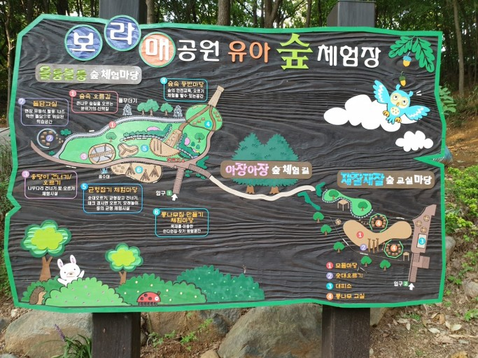

- 


보라매공원
면적 40만 7529m2. 공군사관학교로 쓰여오다가 1985년 12월 서울시에서 인수, 1986년 5월에 복지시설 위주의 시립공원으로 개원하였다.주요 시설물로는 대운동장을 비롯하여 잔디광장, 독서실, 청소년수련장, 소동물원, 체육관, 수영장, 장애자복지관, 남부노인종합복지관 등이 있으며, 그 밖에 연못, 녹지, 산책로, 조깅코스 등이 마련되어 있다.
동작구, 관악구에 걸쳐있는 넓은 휴식공간으로, 인근의 시민들이 많이 이용한다.